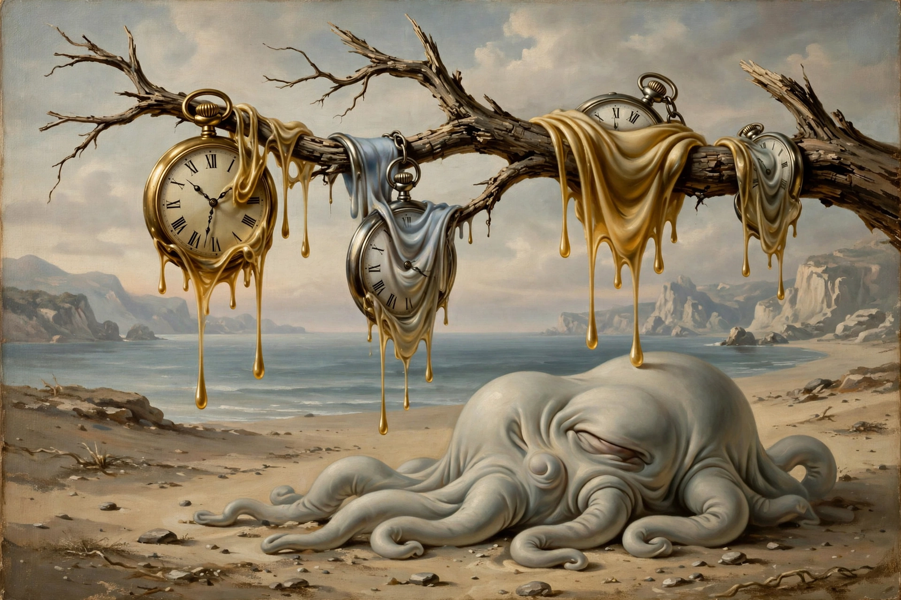

Salvador Dalí

Melting watches draped over a branch and a strange biomorphic form on a beach at PortlligatSalvador Domingo Felipe Jacinto Dalí i Domènech (11 May 1904 – 23 January 1989) was a Spanish surrealist artist renowned for the striking and bizarre images in his work. Born in Figueres, Catalonia, he displayed precocious technical skill and was influenced by Impressionism and the Old Masters before joining the Surrealist group in Paris in 1929.
His best-known work, The Persistence of Memory (1931), introduced the image of soft, melting pocket watches. Other famous works include Lobster Telephone (1936), Metamorphosis of Narcissus (1937), The Elephants (1948) and Christ of Saint John of the Cross (1951). Dalí also worked in film (with Luis Buñuel on Un Chien Andalou, 1929, and Hitchcock's Spellbound), photography, sculpture and design.
Later life
Expelled from the Surrealist group in the 1930s amid disputes over politics and commerce (Breton anagrammed his name as 'Avida Dollars'), Dalí spent the war years in the United States and later returned to Spain. He designed his own museum, the Dalí Theatre-Museum in Figueres, opened in 1974, and is buried in a crypt beneath it.